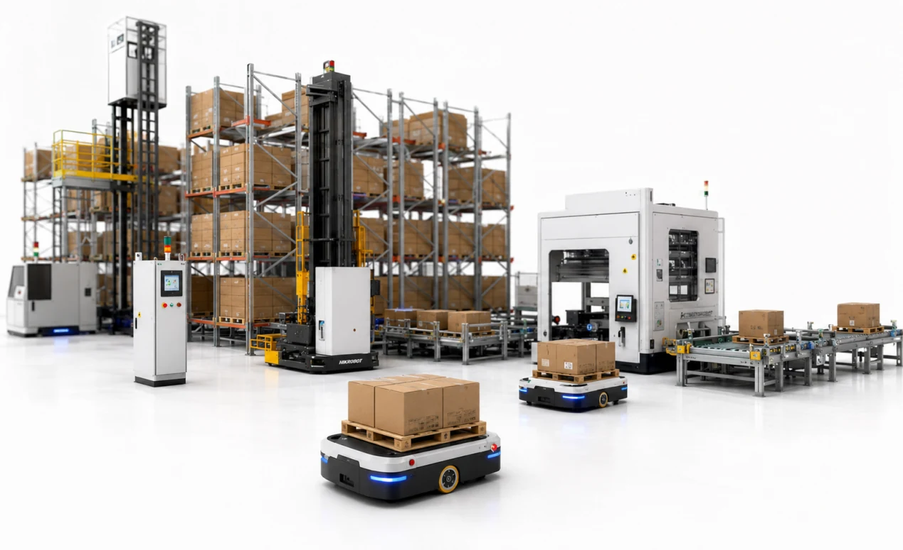
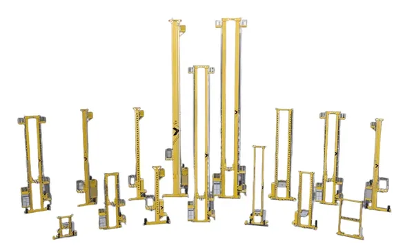
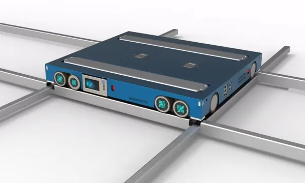
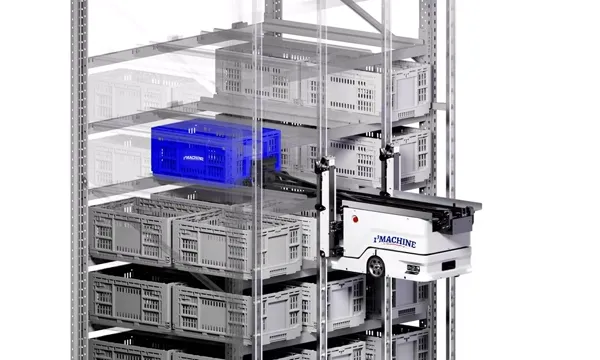

Chemical & Petrochemical
Shuttle ASRS Warehouse
Challenge: Manual pallet handling and limited storage density.
Solution: 18m Shuttle ASRS with WMS integration.
View complete case and videoExplore warehouse automation systems, smart factory solutions, packaging production lines, and industrial manufacturing projects from around the world. Discover how businesses improve storage capacity, production efficiency, material flow, and operational performance through practical automation technologies.

Challenge: Manual pallet handling and limited storage density.
Solution: 18m Shuttle ASRS with WMS integration.
View complete case and video
Challenge: Controlled storage, batch visibility, and reliable handling.
Solution: Stacker crane ASRS with WMS traceability.
View complete case and video
Challenge: High SKU mix, peak order waves, and labor-intensive picking.
Solution: Dense miniload automation for small-item fulfillment.
View complete case and video
Challenge: Manual line feeding and disconnected production logistics.
Solution: AGV routes connecting storage, production, and assembly flow.
View complete case and videoWhether you're planning a warehouse upgrade, factory automation project, packaging production line, or manufacturing expansion, we can help you explore practical solutions, relevant technologies, and real project references.